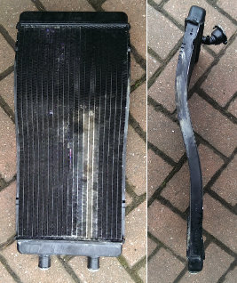
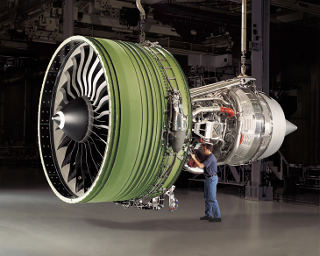
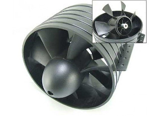
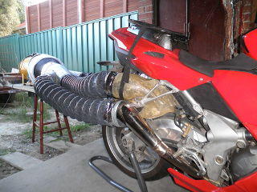
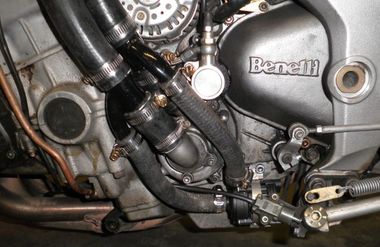

Temperature Control
(14 May 2018)
This subject has been discussed on the Benelli forum on a number of occasions, most recently
here.
This page aims to summarise the thoughts and experiences of some of the members, including my own.
Here's some things you can do to keep your Tornado from boiling if you must ride in traffic.
- switch it off at the traffic lights or in a traffic jam. That's a no-brainer, if you do it early enough.
- make sure both fans are serviceable
- clean the bugs out of the radiator fins to improve the airflow
- check that your radiator is not restricted internally. Get it flow tested.
- check that there are no air pockets in the cooling system. Air pockets take up valuable coolant volume.
- JohnnyO's procedure can be found
here. It works but you need help.
- The one I use involves putting the cooling system under a vacuum, which flattens the hoses and draws the air out.
- Another involves lifting the rear of the bike well off the ground so that no air can be trapped in a pocket. This is somewhat
difficult to do in the average car shed, but it has been done with success.
- remove the thermostat during warmer weather, but make sure it is installed when the ambient temp is below 10 C or the ECU will
never get out of the warm up phase and run it permanently rich.
- cut every second wire from the fan protection mesh. That will increase the air flow a little and still keep fingers at bay.
- lower the fan cut-in temperature. That will slow the rise in temperature sooner, but not solve the problem. You'll need TuneECU
and associated hardware to alter the map.
- run it richer at idle. If it is rich enough it won't boil. I tried this in my garage once. It worked. I put it back to about
12:1 though. It is more likely to foul the plugs if excessively rich, so I'd not recommend it.
- replace the radiator with a larger one, preferably made from copper (as opposed to aluminum) for better heat transfer to the fins.

The radiator shape can not change, but the thickness could be increased, if someone could be found who was willing to attempt the
manufacture of a multicurved radiator. So far no-one has stepped up, but questions have been asked.
- replace the oem fans with a pair that moves more air. There are a couple of possibilities:-
- The oem fans are made by SPAL and are
discussed here.. There are three models available, of increasing
litres/minute. It is possible that the oem unit is not the highest, so choose it. Sod's Law is likely to work against us though ....
- The oem fans are 5 blade ducted. Ducting makes them more efficient, but another thing that improves efficiency is vaning. Vanes
work by smoothing out the turbulent airflow created by the fans and making it laminar. Laminar airflow is more slippery, so it will
exhaust more easily, reducing the pressure and the motor power required. The motor will then speed up and move more air. I haven't
tried this, but all it would take is a long cross vane between the fan and the mesh. It will work but just how well remains to be seen.
- This one is a bit harder, but if you look at a turbo-fan engine there are heaps of blades and it turns out that more blades allow
higher pressures.

If you look at the model aircraft community you'll see (EDF) fans they use in turbo-fan aircraft models. These generally have deeper
blades and lots of them. Seven or more. Hobbyking have a 127 mm EDF that might be pressed into service

There is a lot of room between the radiator and the oem fan base and some space between the fan and the mesh at the outlet.
I can imagine a motor at the inside middle bottom driving two fans with a toothed belt, and a crossed vane at the outlet in front of
the mesh, or no mesh at all and more vanes to stop inquiring fingers getting at the impeller.

I know that connecting the bottom 2/3 of the radiator to an exhaust fan solves the problem in the workshop so maybe increasing the
flow at the top 1/3 will improve the situation on the road. I haven't done it, so I don't know.
- talk to Alex at Maniac Motors. He has an electric water pump (EBP15) kit that replaces the mechanical one. The mechanical pump moves
13 litres/min at 5000 rpm and almost nothing at idle. This is the crux of the matter! If very little coolant flows through the radiator,
very little heat can be conducted away from the engine. An electronically controlled water pump can run at the flow rate demanded by the
situation. It can even replace the thermostat if it knows the engine temperature.
Davies Craig have been doing this for years. So, without the thermostat, the flow is further enhanced.
The Water Pump
In March of 2014 I received a message (PM) from Tommaso Iarrera (Tommy1130) of R&T Engineering in Milazzo, Sicily. He talked about his
redesigned water pump, in which "the impeller dimension has been multiplied by two, so the water flow is double compare with the original
specially at low rpm". This got me interested and asked for more information, in particular the flow vs rpm graph. Unfortunately I didn't
end up getting anything from him. Apparently the pump had already became a reality, since Tommaso offered it for sale on his
post in November 2013
I never bought one, but after more discussion on the forum I became aware that Alex at Maniac Motors was working on an what he called an e-pump.
He had suggested I try it out, as we here in Australia have ready access to great test conditions! The offer never came to fruition for some reason
or another so I did a few searches and managed to find the Davies Craig EBP15 and bought one. I only found out recently that that is the pump that
Alex was using.
I didn't consider replacing the existing pump but in hindsight I should have. What I did do was set up the EBP15 in parallel.

I used this on a trip to Phillip Island and then a lap of Tasmania. While it did improve the cooling, it really wasn't a spectacular success,
so I removed it. I don't spend much time at all in traffic so I rarely have an issue with overheating.
In hindsight, I expect that at idle, the EBP15 was circulating coolant back through the mechanical pump instead of through the engine, but
I really don't know. The thermostat was also still in place, so the system wasn't ideal.
Fast forward to May 2018.
I received a PM from Alex-S asking me what I thought could be done to reduce the propensity for his Tornado to boil when in traffic. I rolled out
the standard responses stated above, then I posted it on the forum.
Stingerwolf responded with his experience
with Alex's e-Pump kit.

Stingerwolf has an 1130 engine in one of his Tornados which produces more power and hence more heat than the 900 and required a better solution.
"The electric water pump upgrade is better than the oem pump but not the final solution. For this you need 2 extra vents (fans) under the
radiator!"

It will still overheat, but it takes longer, and when he stops the engine the water pump and extra fans keep working to drop the temperature. It
will drop from 113°C to 75°C in under 2 minutes.
His standard 900 has the two extra fans fitted but they make little difference.
To summarize - if you must idle the bike for extended periods
The oem pump moves 13 lpm at 5000 rpm, and bugger-all at idle. Alex's e-pump, a Davies Craig EBP15 can move 15 lpm at any engine rev, even zero.
If you switch it off, it acts like a thermostat, so the mechanical one can be removed to increase the flow. This works, as Stingerwolf
and Alex have proven. It works better than anything else yet tried if you must idle the bike for extended periods, but the fans need to be upgraded
to take full advantage.
How To Make it Better
Years ago I learnt that heat transfers from water to the fins of a radiator faster than I had imagined. Flow rate is not a limiting factor when
considering heat transfer from water to the radiator metal. This means that as the flow rate increases so does the capacity to move heat from a higher
temperature source (the engine) to a lower temperature sink (the radiator). The absolute limit occurs when the source and sink reach the same
temperature, but the flow can not be made fast enough for this to happen. In practice there will be an ultimate temperature differential for each flow
rate, water and air. When this is reached the water temperature in the radiator must increase with engine temperature, and will reach boiling point.
Increase the airflow and the differential increases, as Stingerwolf discovered.
So the trick is to increase the water flow as much as possible in order to maximize the temperature differential between engine and radiator, then
if the ultimate differential is reached, increase the airflow through the radiator to increase it further.
Davies Craig make a 23 lpm and a 40 lpm e-pump that uses the same pump as the EBP15, but more powerful and higher speed motors to get the higher
flow. Alex is currently working on replacing the EBP15 with an EBP23. This will draw no more power from the alternator/battery than the EBP15 (20W).
The EBP40 draws substantially more at full power (64W) than it's smaller siblings. If the mechanical water pump was replaced with an e-pump, it
would seem sensible to choose the EBP40 and control it's flow, and hence it's power draw. The alternator produces 48A at 5000 rpm, or 650 W. If both
high and low beam lights are on (mine are re-wired thus, but it is not standard), tail and stop lights are both on, both fans are running, the fuel
pump and ignition are running continuously (they never will but should cover the unknown ECU power), then the total power in reserve is just over
100 W. That would be enough to cover an EBP40 if it ran continuously, which is not necessary. With the higher flow it may not be necessary to provide
additional air flow. The radiator may just be hotter.
It may even fit. It's longer but not substantially.
It just remains then, to decide if an electric water pump can be as reliable as a mechanical one, which may be a personal choice in the absence of data.